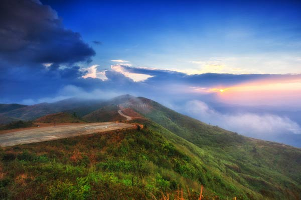
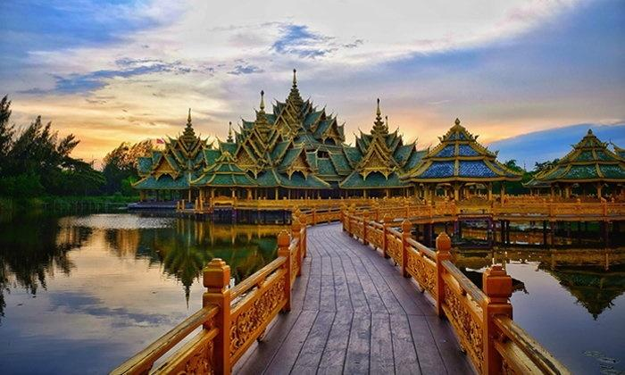

ทะเลแสนงาม ฟ้าสีครามสดใส
หาดถ้ำพระนาง เป็นหนึ่งในไฮไลท์การท่องเที่ยวริมทะเลของจังหวัดกระบี่ สถานที่ท่องเที่ยวสวยที่สุดในไทย เป็นชายหาดขาวสะอาด ที่มีวิวหน้าผาหินปูนและถ้ำต่าง ๆ เมื่อเดินไปสุดหาด จะพบกับถ้ำที่ล้อมรอบด้วยหาดทรายขาว และน้ำทะเลใส ในช่วงเที่ยงวันชายหาดจะเต็มไปด้วยนักท่องเที่ยว ทั้งชาวไทยและชาวต่างชาติ เป็นสถานที่ท่องเที่ยวยอดนิยมตลอดทั้งปี

ภูเขาสูงสง่า ปลาปลาปูปู
ภูชี้ฟ้าเป็นยอดเขาที่สูงที่สุดในเทือกเขาดอยผาหมี ชายแดนไทย-ลาว อำเภอเทิง จังหวัดเชียงราย ลักษณะทางธรรมชาติที่โดดเด่น เป็นหน้าผาแหลมที่ยอดเขาทอดยาวไปสู่ท้องฟ้า ชี้ไปทางชายแดนฝั่งลาว จึงได้ชื่อว่าภูชี้ฟ้า จุดเด่นอย่างหนึ่งของภูชี้ฟ้า คือ ทิวทัศน์ธรรมชาติที่สวยงามมาก โดยเฉพาะในช่วงฤดูหนาว ติดอันดับสถานที่ท่องเที่ยวสวยที่สุดในไทยทุกปี มีนักท่องเที่ยวจำนวนมากมาสัมผัสอากาศเย็น ชมพระอาทิตย์ขึ้นที่สวยงาม หรือแม้แต่โอบกอดทะเลหมอก ที่ปกคลุมไปทั่วทุกพื้นที่เสมอ

เข้าวัดเข้าวา เข้าลาเข้าข้าว
วัดร่องขุ่น ถือเป็นวัดชื่อดังแห่งจังหวัดเชียงรายที่สร้างชื่อเสียงไปทั่วโลก จากการประดับตกแต่งด้วยลวดลายของวัดไม่ว่าจะเป็นศิลปะการวาด การปั้น หรือการใส่ลูกเล่นอย่างกระจกเล็กๆ มากมายจนออกมาสวยงามราวกับอยู่บนสวรรค์ สร้างสรรค์โดยฝีมืออาจารย์เฉลิมชัย โฆษิตพิพัฒน์ ศิลปินที่มีความมุ่งมั่นในการรังสรรค์งานศิลปะที่งดงามแปลกตา ผสานวัฒนธรรมล้านนาได้อย่างลงตัว